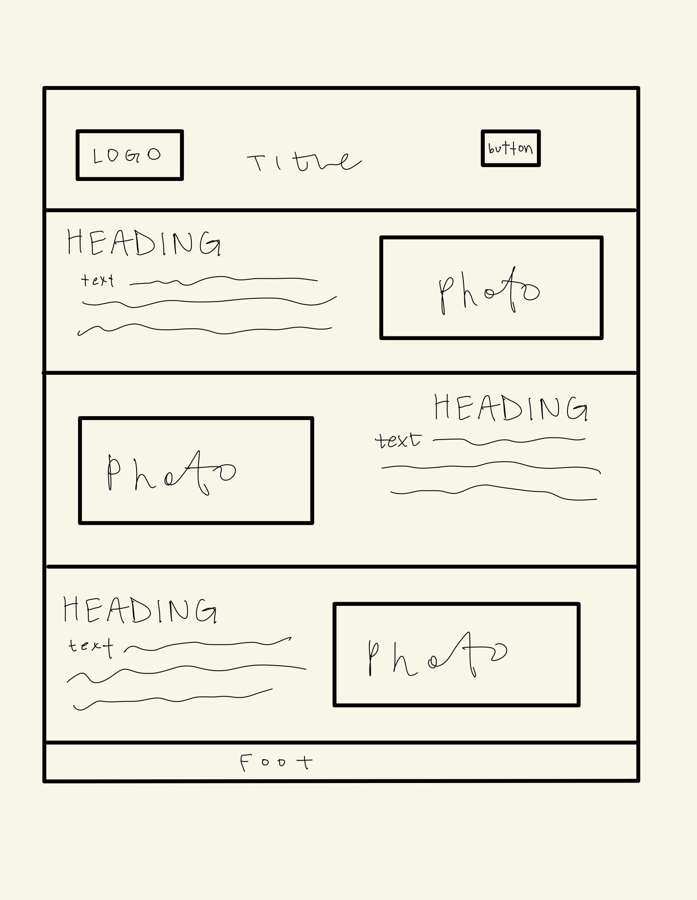
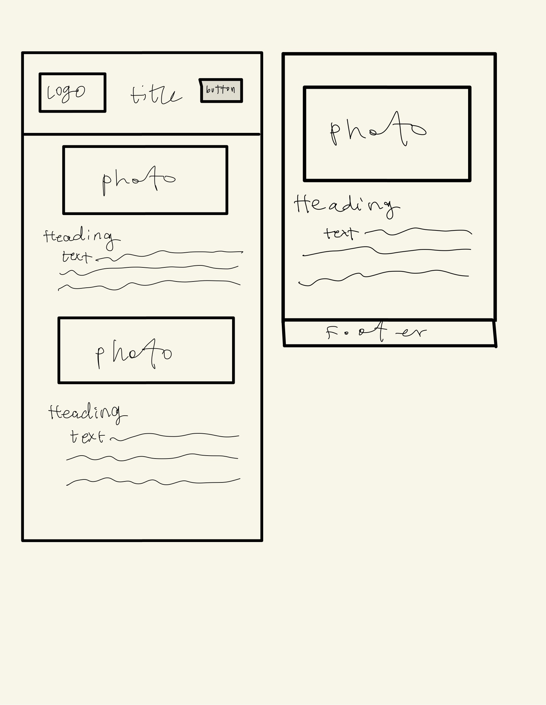

Site Name
Houston Chamber of Commerce
Site Purpose
The Houston Chamber of Commerce website is for connecting businesses, community, and tourists withing the city, fostering growth and development.
Scenarios
Holiday Events throughout the city
City's population growth
Common areas for tourists in the city
Color Schema
Color Schema: website link
Primary: Coral #F79489
Secondary: Tiger Lily #B95C50
Accent 1: Dusty Rose #DEB3AD
Typography
Heading font: Trirong
Content font: Roboto
Wireframe

